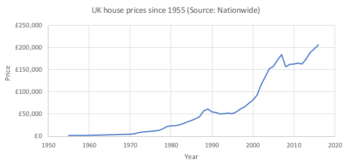
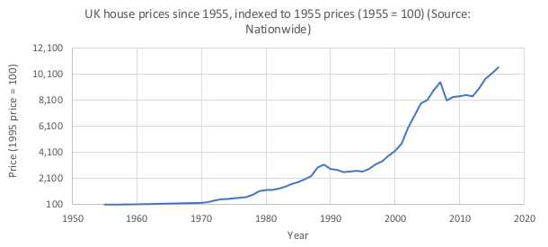
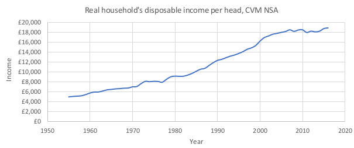
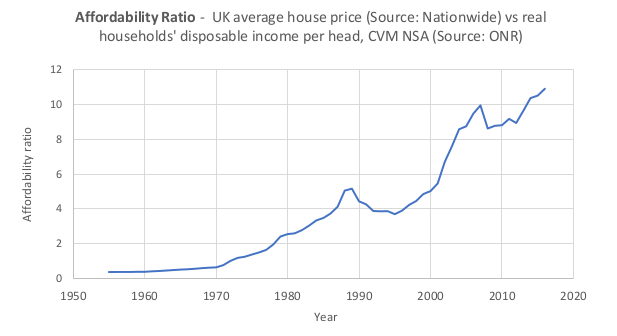
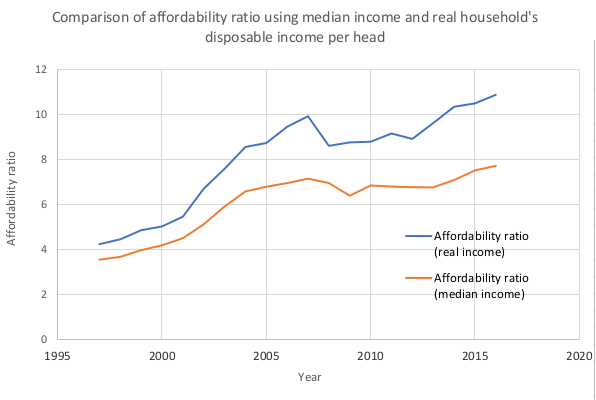

Are millennials right to complain about houses being less affordable than ever before?
Houses are expensive things, especially if you don’t have one. First off I should ‘fess up: I’m one of those moaning millennials, part of the generation that some argue have been most hard-hit by the house price rises of the past 60 or so years, but others argue are a bunch of winging so-and-sos who don’t know how good they have it. I’ll let you decide which is closer to the truth.
As part of research for another article I’m writing, I started wondering just exactly how expensive houses really are, particularly when compared to recent history. All the data I use is for England only. I live in SE England, the most expensive part of the UK in terms of house prices.
I started by finding historical data on average house prices in England.
The UK Office for National Statistics has been officially recording house
prices only since 2016. It’s latest statistical bulletin
backdates prices only as far as 2005 (see Fig 1.).

So prices have increased by £75,000 since just 2005; that’s an increase of 50%. Remember, these are the average house prices, so if you live in certain areas of London or the South East, the increase is likely even higher. You can check per local authority area in Figure 5 of this report.
That’s interesting, but how about further back in time? How much
did a house cost in 1990? Or 1960? Nationwide Bank (a UK mortgage provider)
publishes just such historical data, although methodology changes mean it
should be taken with a pinch of salt (see Note 1 below). Fig. 2 shows UK
average house prices from 1955 to 2018.

Alright, that makes it look like houses in 1955 were basically free, so I went ahead and indexed all the prices to the average price in 1955 (see Fig. 3).
Of course, the quality of houses available in 2018 may be different to that in 1955, but not by much. Based on Fig. 3, I’m going to be lazy and say that the same house bought in 2018 would cost you, on average, 101 times the price you would have paid had you bought it in 1955.
What about wage inflation? Of course houses cost more in 2018 that in 1955 because we’re not all earning 9s 5d a week (please no comments about whether this is an accurate wage in old money – I have absolutely no idea). This is where we can start to put into context the changing cost of housing by looking at how what we've earned has changed over time.
The ONS reports house prices against earnings back as far as 1998 (see Fig. 4). You can see that house price rises are outstripping wage rises by quite some margin. That means that even though your salary may be increasing, it likely isn’t increasing quick enough to keep up with the cost of buying a house. On the other hand, if you already own a house then you’re basically rolling in it.

I wanted to look further back. 1998 already feels like the “modern” era of housing, where credit was easy and interest rates low – two factors likely to push up prices. The Nationwide house price data went back as far as 1952, but the UK ONS does not provide median annual earnings further back than 1998. However, they do have data on what’s called “real households' disposable income per head, CVM NSA” (See Note 2). Fig. 5 shows this real income per head against time.
You can see how real income steadily climbed, plateauing slightly in the early and late 70s before continuing rising up until the Financial Crisis, since when it has basically flatlined.
Now to compare real disposable income per head against house prices. But first, Fig. 6 is a visual of the bitcoin price history before the Christmas 2017 crash…just kidding: although it does resemble cryptomanic speculation, really it’s showing something called the affordability ratio (ironic, I know), which for this figure is the average house price in a given year divided by the real income per head in the same year.
You’ll notice Fig. 6 looks remarkably similar to Fig. 2. This is because wage growth has been roughly linear and a much weaker trend compared to house price growth. Interestingly, factoring in wage growth actually accentuates the house price booms (and busts), as these seem to happen in times where wage growth is low; if “work” isn’t paying well, people seek to make profit from housing instead.
Conclusion
The millennial’s cry of previous generations being lucky to buy houses when they were “cheap” does seem to hold up based on the affordability ratio alone. Older generations will refer to the punitively high interest rates in the past, but those rates were often accompanied by similar levels of inflation that helped their debts to evaporate away.
Houses are expensive things, especially if you don’t have one. And they are getting more and more expensive all the time. Although income can be measured in many ways, the trend is clear in that wages cannot keep up with rising house prices. This makes it tough to buy your first house because of the large, upfront deposit. As well as being somewhere to live, a house is the largest and least diversified investment a person will ever make. Houses that cost many multiples of their salaries are forcing the younger generation to plough vast amounts of their wealth into a single asset. This exposes them to significant investment risk and likely to prevents them from building up a decent pension or other savings.
There is no quick fix for this problem. Looks like for now us millennials will just have to carry on moaning.
What do you think? Should millennials stop wasting all their money on smart phones and just bite the bullet of today's house prices? Leave your comments below.
Note 1 – things to bear in mind when using the Nationwide house price data
The Nationwide house price methodology has developed over time and this needs to be considered when interpreting the long run series of house prices. Maintenance in terms of updating weights for the mix-adjustment process is carried out at regular intervals.
Significant developments include:
- 1952 - 1959 Q4 Simple average of purchase price.
- 1960 Q1 - 1973 Q4 - weighted average using floor area (thus allowing for the influence of house size).
- 1974 Q1 - 1982 Q4 - weighted averages using floor area, region and property type.
- 1983 Q1 - Development of new house price methodology. A statistical ‘regression’ technique was introduced under guidance of ‘Fleming and Nellis’ (Loughborough University and Cranfield Institute of Technology). This was introduced in 1989 but data was revised back to 1983 Q1.
- • 1993 - Information about neighbourhood classification (ACORN) used in the model were significantly updated following Census 1991 publication - regular updates since but typically for new postcodes.
Note 2 – median income vs real household’s disposable income (RHDI) per head:
I contacted the ONS to ask about differences in methodology between RHDI and median annualised incomes. Their response was that they were not directly comparable. Median income focuses only on how much an individual earns (rather than households) based on their tax records (PAYE). RHDI looks at the amount money a household has available to spend after tax and is adjusted for inflation, such that is a measure of the real purchasing power of households over time. It's perhaps unsurprising then that Fig 7, which is a comparison of the affordability ratio for median income and RDHI for the years the data sets overlap , shows a worse affordability ratio for RDHI. However, the trendlines closely match so they paint a similar picture of house prices outstripping wage growth.
© 2018 DAVID WATSON ALL RIGHTS RESERVED